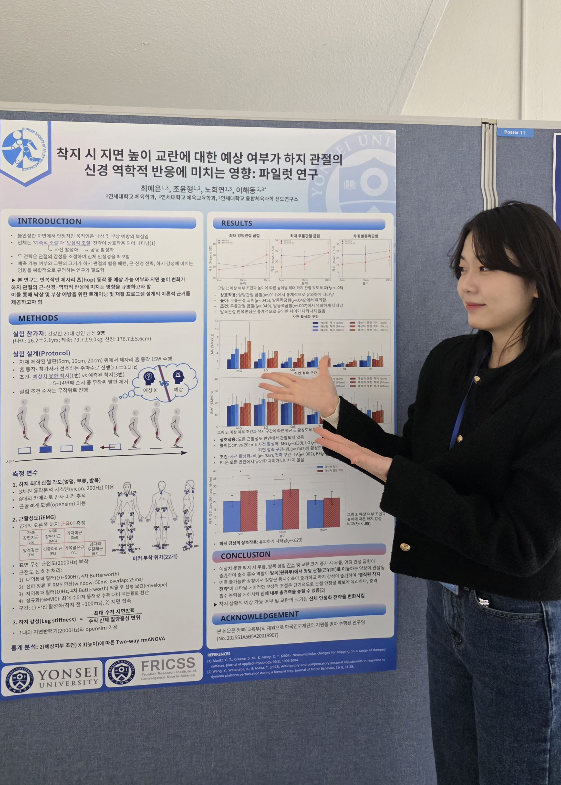
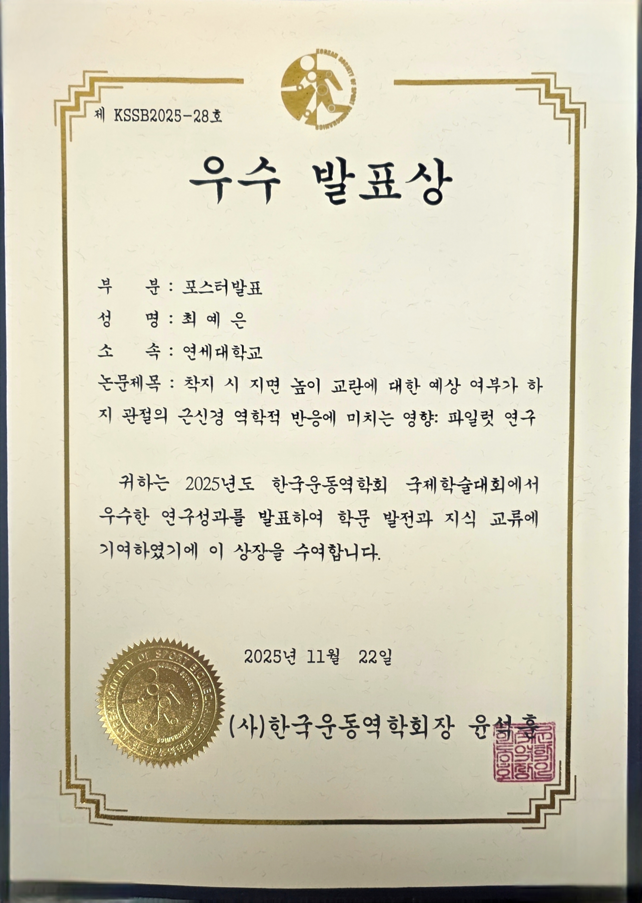
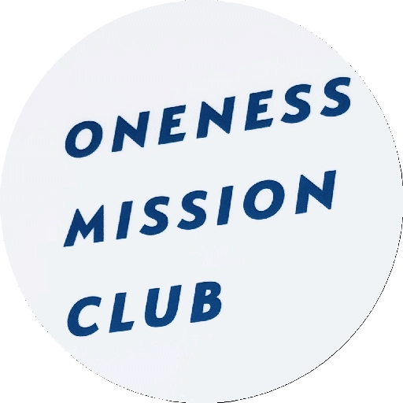
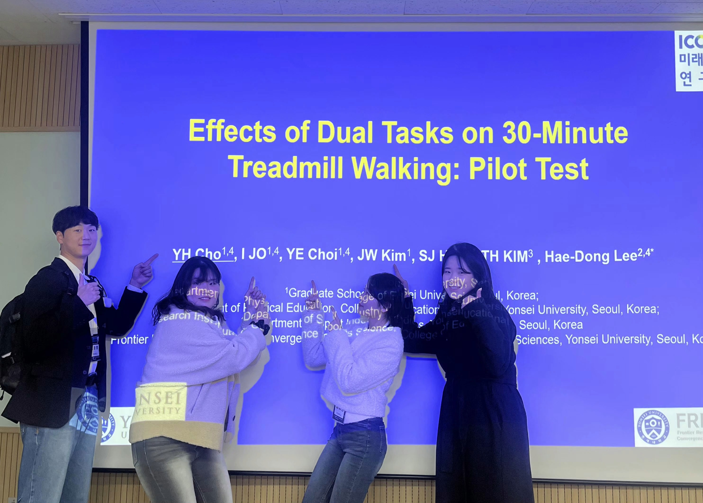
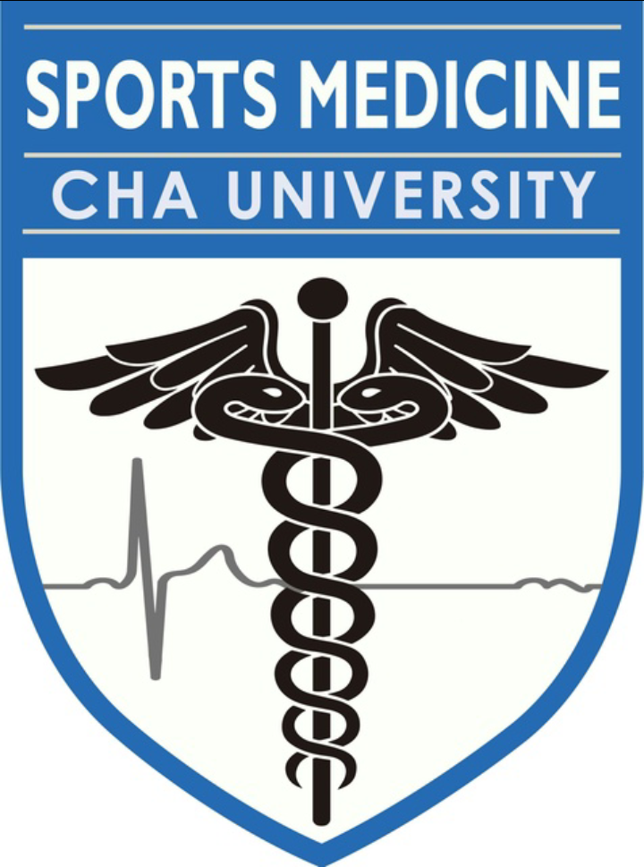
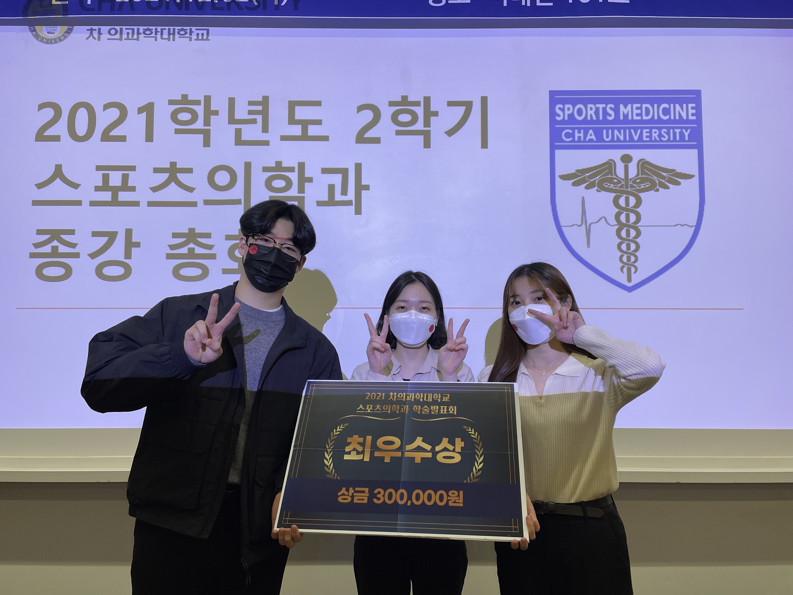

About Me
Hello 🙌🏻
I'm Yeeun Choe — pronounced Yeh-eun, or feel free to call me Yennie!
With a foundation in Sports Medicine and graduate training in Biomechanics, I've grown deeply curious about how the human body moves and adapts. My research focuses on understanding movement by integrating neuromuscular responses and mechanical behaviors — exploring how the nervous system and musculoskeletal structures interact to produce and regulate human motion.
By bridging these perspectives, my ultimate goal is to develop evidence-based insights for predicting and preventing musculoskeletal injuries, helping people move with confidence and resilience.
On this page
🎓 Educations
Yonsei University
Mar 2024 - PresentMaster of Physical Education in Biomechanics
Neuromuscular Mechanics Laboratory
Thesis: "Neuromuscular response of the plantar flexor muscle-tendon unit to unanticipated ground-level perturbation during repeated hopping"
Seoul, South Korea
🏆 Awards & Honors
Master's Student Research Fellowship
Humanities and Social Sciences Division (Arts/Physical Education), National Research Foundation of Korea
(No. 2025S1A5B5A20019907)


Best Presentation Award
2025 KSBB International Conference, Korean Society of Sport Biomechanics

Graduate Student Research Assistant Scholarship
Department of Physical Education, Yonsei University

Best Presentation Award (Co-author)
2024 KSBB Fall Conference, Korean Society of Sport Biomechanics
Top Remnant Scholarship
Immanuel Seoul Scholarship Committee, World Evangelization Evangelism Alliance

Student Representative Scholarship
Department of Science in Sports Medicine, CHA University


📚 Academic Activities
Certificate of Completion
May – Jun 2025Practical English Communication Skills for Academic Life
Yonsei University Library & BK21 Graduate School Innovation Project
Completed a 4-week academic English workshop covering cross-cultural communication, clarity in expression, interactive dialogue, and real-world application.
Laboratory Representative — International Student Visit
May 2026Neuromuscular Mechanics Laboratory, Yonsei University
University of Texas at San Antonio, College for Health, Community & Policy
Served as the laboratory representative to welcome a delegation of approximately 20 students and faculty from UT San Antonio. Delivered a presentation introducing the lab's research focus and ongoing projects.
Online Column Contributor
Nov 2021University Sports Medicine Column
CHA University, Department of Sports Medicine
Authored a column on the relationship between cervical posture, plantar pressure balance, and lung capacity, published through the university's sports medicine platform.
Undergraduate Research Presenter & Conference Initiator
Nov 2020Department of Sports Medicine, CHA University
Proposed and advocated for the creation of a departmental academic conference to the department chair, which led to the establishment of what has since become an annual award-based competition. Presented undergraduate research on human movement analysis at the inaugural event.